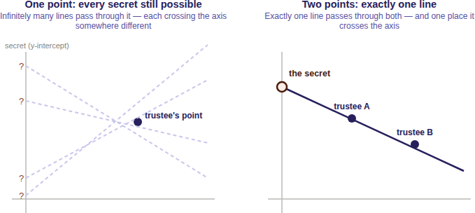
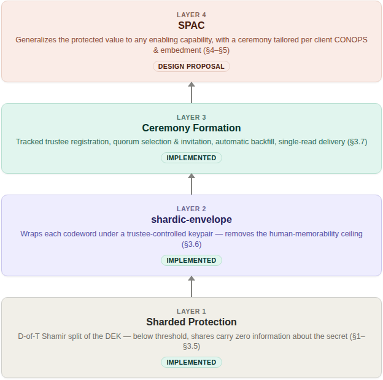
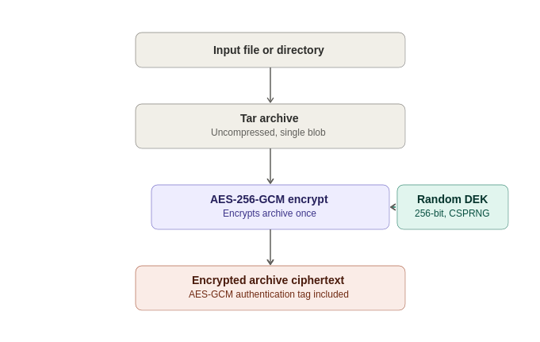
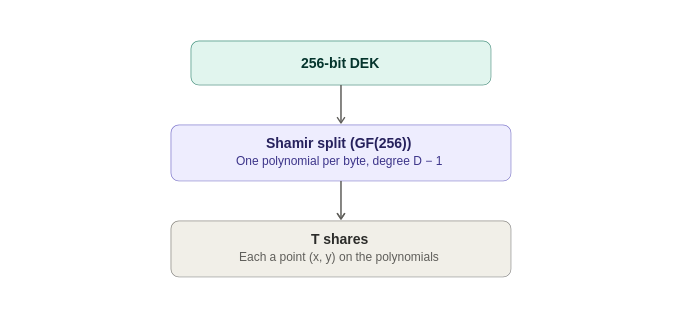
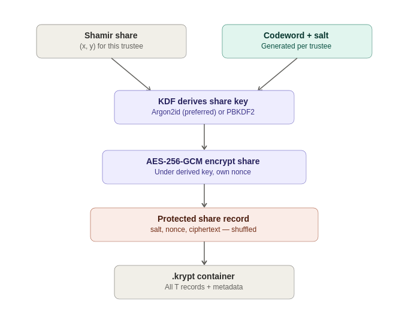
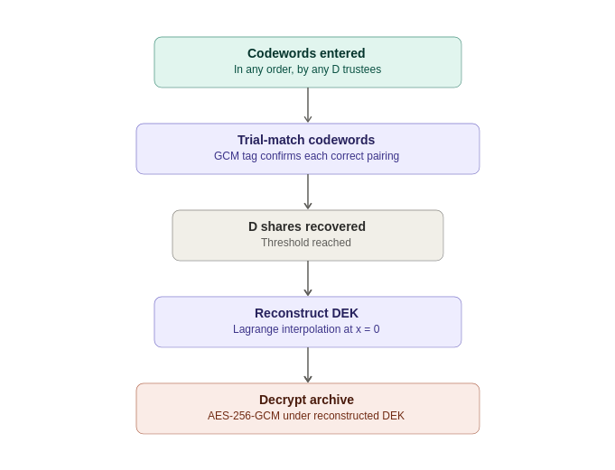
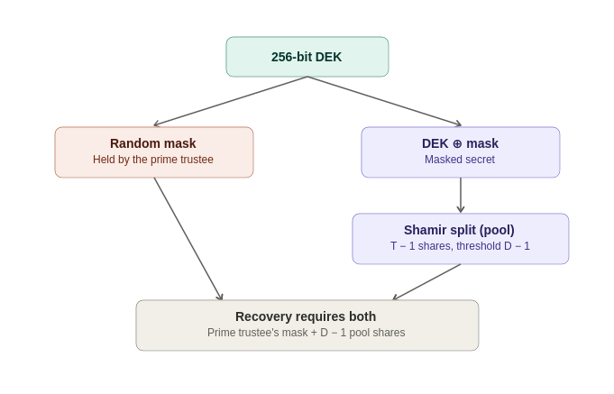
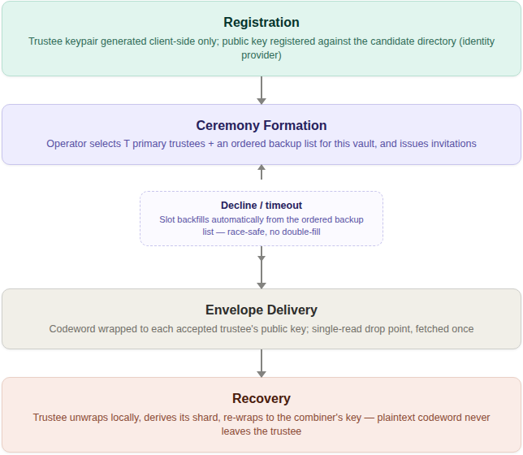
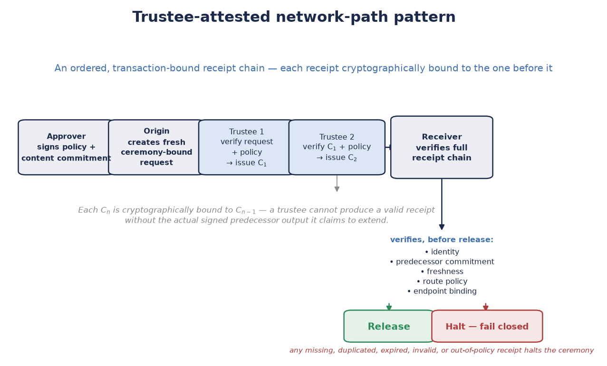
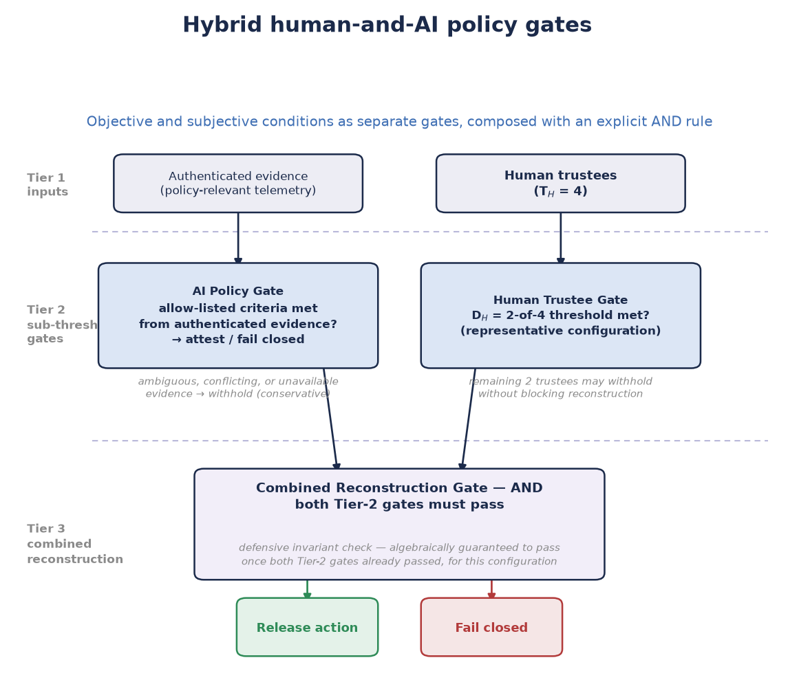

SHARDIC
Sharded Encryption for Threshold-Recoverable Vaults, System-Integration Ceremonies, and Product-Embedded Protected Actions
One Threshold-Recovery Primitive at Three Levels of Implementation: Personal Utility, System Security Integration, and Product Protection
White Paper — Version 4.1
September 2026
Conventional file encryption is monolithic: whoever holds the key — or controls the system that holds it — controls the plaintext, permanently and alone. shardic takes that single point of control out of the cryptography itself instead of asking policy or process to make up for it. We encrypt a file or directory once under a random data encryption key (DEK), then split that DEK with Shamir’s Secret Sharing over GF(256) into T shards for T independent trustees, with a threshold D below T. Each trustee unlocks their shard with their own shardic encryption key, and it takes at least D of them to rebuild the DEK. Below that threshold, the shards carry zero information about the key. That’s not “expensive to break” — it holds no matter how much computing power an attacker brings.
We apply that one primitive at three cumulative levels, each reusing the level beneath it unchanged.
Here’s the road ahead. We start by laying the three levels side by side so you can pick the depth that fits your interest. Then we walk Level 1’s operations and mechanics in full, follow with Level 2’s ceremony, and finish the build-up with Level 3’s SPAC ecosystem: the Fielded Prime Element, shardware-token hardware variants, and non-bypassable invocation. A security discussion spanning all three levels comes next, closing with NEAT, a design framework we name for critical SPAC deployments. Four scenarios then walk a full ceremony lifecycle — two product-protection cases, one network-path case, and one hybrid human-AI policy gate — before a closing summary of what the design offers and where it deliberately doesn’t fit. Two appendices round things out: a standalone primer on Shamir’s Secret Sharing, and the full story on codeword modes, tuning, and field deployment.
T is the number of shards; D is the reconstruction threshold. A PT SPAC is the plaintext enabling value for a protected action; a CT SPAC is its protected ciphertext form. A Fielded Prime Element is a deployment-specific, hardware-bound contribution that ties release to one approved fielded system.
Standard symmetric encryption is simple: generate a key, encrypt the data, and store or share the key so someone can decrypt later. That simplicity is also its structural weakness. Whoever holds the key — a person, a process, a single server — has complete, unilateral power over the data. Access is a binary, anonymous fact: you hold the key or you don’t. Nothing in the cryptography can require a joint decision, or prove afterward who authorized a recovery.
Fancier key management doesn’t change that. Wrap the symmetric key under a public key, and the private key becomes the new monolithic secret — you’ve moved the single point of control, not removed it. Lock the key in an HSM, a safe, or a hardened server, and one compromised operator, one coerced admin, or one stolen credential still defeats it. The trust model keeps the same shape: one secret, one holder, one point of failure.
For routine data, that’s a fine trade — simplicity and low friction usually win. It turns into a liability exactly where organizations care most: root credentials, master keys, and archives whose misuse by one rogue insider or compromised party would be catastrophic.
shardic removes the single point of control from the cryptography itself. Instead of one key held by one party, we embed the DEK in a random polynomial built with Shamir’s Secret Sharing, so it takes D points to reconstruct. T points on that polynomial — the shards — each go to one of T independent trustees, and each trustee unlocks theirs only with their own shardic encryption key. No shard is a fragment of the DEK. Recovering the plaintext takes at least D trustees, each independently choosing to unlock and contribute their shard.
This isn’t just operational enforcement, like requiring D signatures in an application layer. It’s information-theoretic: fewer than D shards leave the polynomial — and so the DEK — completely undetermined, equally consistent with every possible key, no matter how much computing power you throw at it.
In practice:
Operational assumption: this holds only once the creator has securely deleted the plaintext, any retained shards, codeword copies, and other recovery material, and has verified trustee distribution. The cryptography can’t undo copies kept outside the scheme.
A rogue insider, a coerced employee, or one compromised account can’t cause disclosure. It takes collusion among at least D independent parties.
The trustee pool absorbs the loss or absence of up to T − D trustees without losing recoverability — unlike a strict N-of-N or two-person rule, which has no slack.
A recovery can also yield an auditable record of authenticated contributors — if the deployment adds protected signing credentials, signed contributions, trustworthy timestamps, and retained verifiable logs. Threshold reconstruction alone doesn’t establish identity or legal non-repudiation.
The net effect: data protection shifts from “who holds the key” — a fact about custody — to “who agreed to unlock it” — a fact about consent, spread across independent parties who can’t individually override the group.
Threshold-recoverable encryption fits wherever policy, regulation, or risk tolerance already says no single party should be able to decrypt something alone, and where access is rare and high-stakes rather than continuous and routine. For example:
Lock a root CA private key, a production database master key, or a SCADA override credential in a vault with T=7 trustees — senior engineers, security officers, an executive — and D=4. Day to day, nobody can reach the key. It comes back only in a genuine emergency, and only if four of the seven each agree to take part.
A family or founder splits access to a password manager’s master vault, or other key-person credentials, among relatives, a lawyer, and a business partner (T=5, D=3), using whole-word codewords trustees can actually memorize instead of writing down.
Generalized two-person-rule systems (“any 3 of 7 officials”) that tolerate absence or incapacity without weakening the classic two-key model’s no-lone-actor requirement.
Escrowed decryption keys for classified or lawful-intercept archives, split across officials from different branches or agencies so no single agency — or rogue insider within one — can decrypt alone.
Continuity-of-government credentials that survive the loss of some custodians while still requiring majority agreement to invoke.
Election tabulation keys split among representatives of multiple parties or observers.
M&A escrow and dispute-resolution vaults — deal terms or sensitive documents released only by a quorum of board members, outside counsel, and an escrow agent.
Cryptocurrency or treasury cold storage — root key material behind a multisig wallet, split among founders or board members so no single executive can move funds alone.
Whistleblower or source-protection archives, releasable only when a threshold of editors or lawyers agree.
Regulated data with separation-of-duties requirements (SOX, HIPAA “minimum necessary”) — technical enforcement of an existing compliance control, not just a policy statement.
shardic fits best for rare, high-stakes, offline “break-glass” access with a small, fairly static trustee set, where you must be able to store and share the vault file without leaking who holds what. It fits poorly for frequent or live authorization, for revoking one trustee without a full re-split, or for online multi-party protocols — threshold-signature schemes (e.g. FROST) or HSM-backed multisig serve those better, with key rotation and live quorum.
We’ll get to the byte-by-byte construction later. First, let’s build intuition for why a threshold scheme works at all — because “splitting a key into pieces” isn’t what shardic does, and wouldn’t give you shardic’s guarantees.
Say you cut the 32-byte DEK into four 8-byte chunks and hand one to each of four trustees. Or you do the cleverer XOR split: every shard is random except the last, chosen so they all XOR back to the key. Both give you multi-party protection, and both can be information-theoretically sound in the narrow sense that holding fewer than all pieces reveals nothing. But both are all-or-nothing. Reconstruction needs every piece; you can’t ask for “any D of T.” Lose one trustee for good, and the key is gone forever — exactly the fragility threshold recovery exists to avoid.
The real idea: hide the secret as a point that only enough hints can locate. Picture the DEK not as bytes but as the spot where a straight line crosses the vertical axis. Draw that line so it also passes through T other points, one per trustee. A single trustee’s point tells them nothing: infinitely many lines pass through it, each crossing the axis somewhere different, so every secret stays equally possible. Put any two trustees’ points together, though, and exactly one line passes through both — so there’s exactly one crossing. Two points fix a line; that’s what makes D = 2 work.

Raise the threshold to three and the trick generalizes: swap the line for a curve with one more bend (a parabola), which takes three points to pin down. One or two points still leave every secret equally plausible. In general, a threshold of D is a curve that needs exactly D points to fix, with T points handed out, one per trustee, all on the same curve. Because any D of the T points will do — not a specific D, and not all T — the scheme absorbs the loss of up to T − D trustees, just as promised earlier.
There’s no partial progress, either. A combination lock rewards partial knowledge — get two of three digits and you’re close. A threshold scheme doesn’t. One trustee’s point, or even D − 1 of them, doesn’t narrow the secret to a short list; every value stays exactly as plausible as before. No partial credit, no “getting warmer,” no ruling out candidates one collusion at a time. Until the Dth point arrives, the answer doesn’t exist.
In the actual implementation, “a line” or “a curve” becomes a polynomial of degree D − 1 over a finite field, applied independently to each byte of the DEK — the same idea, made precise and computable. The technical mechanics later on dig into it.
The rest of the paper covers shardic’s mechanics in full. Here we preview how they stack into three cumulative levels, so you can find the depth that matches your interest before diving in. Each level reuses Level 1’s D-of-T guarantee unchanged: Level 2 changes how a trustee’s key reaches them and how the trustee pool is organized; Level 3 changes what the protected value actually gates. You can stop at any level and still have a complete, sound system — each stands on its own, not as a staging ground for the next.

The foundation, and all you need for the personal, estate, and
small-business cases above: split a secret so that nothing short of D of
T independently held codewords can reconstruct it, with zero information
leaking below that threshold regardless of computing power. It’s a
complete, standalone tool today. The project’s CLI and GUI implement
exactly this, with no server, no network dependency, and no
infrastructure beyond the .krypt file and whatever
out-of-band channel you use to hand codewords to trustees. Coming up
next, we walk through creating and recovering a vault at this level,
then dig into the mechanics underneath.
Level 1’s manual, one-off codeword handoff suits a family or small
team, but it doesn’t scale to an organization that needs a standing,
auditable, repeatable process — say, a security team managing many
vaults against a rotating on-call trustee pool. Level 2 is that more
robust ceremony. shardic-envelope removes the memorability ceiling by
delivering each trustee’s key wrapped under their public key instead of
memorized. Ceremony formation turns trustee registration and selection
into a tracked process backed by an identity provider: candidate
registration, per-vault quorum selection with an ordered backup list,
automatic backfill on decline or timeout, and single-read, addressed
delivery of each wrapped key. It’s implemented and demonstrated
end-to-end today (shardic_envelope_crypto.py,
demo/combiner/app.py), not just proposed. Adopting it is
optional — if Level 1 covers your needs, you lose nothing by skipping
it.
Level 3 generalizes the protected value from “a file’s plaintext” to any enabling code for a protected action — a shardic protected action code, or SPAC. It also turns the ceremony from one fixed shape into something you tailor per deployment — which trustees, which local-unlock factors, which recovery-time objective — to fit a product’s or fielded system’s CONOPS and embedment environment. Binding a SPAC to one specific piece of hardware (the Fielded Prime Element, introduced later) is what turns an abstract capability-gating framework into something a product team can actually embed: a treasury platform’s disbursement-signing credential, a safety interlock’s release-enable value, or any consequential action a product should never authorize on the word of one compromised or coerced party.
This level also holds the pattern we consider most consequential: composing human and AI trustee classes under one explicit threshold rule, so neither an AI-initiated action nor a rogue human one can proceed without the other class agreeing independently. Everything here is a design proposal, built entirely on the already-implemented, unmodified math of Levels 1 and 2.
This part describes shardic’s mechanical foundation from the operator’s seat — how you create, distribute, and reconstruct a protected value — independent of any specific tool. It’s an essential piece of a protection system, not the whole thing. Before using a protected value or SPAC operationally, a deployment still has to establish its authorization policy, trusted operating environment, identity and credential assurance, custody procedures, audit retention, incident response, and system-specific safety controls.
You start with two numbers: how many trustees (T) will each hold a
shardic encryption key, and how many (D) must agree to recover. From
there, vault creation is a fixed sequence. We archive the input into one
blob and encrypt it once under a random 256-bit DEK. We split the DEK
into T Shamir shards at threshold D, protect each shard under its own
shardic encryption key (SEK), and write everything out as one
self-contained .krypt file — plus one credential per
trustee, in whatever form the chosen key source produces.
You can adapt the SEK mechanism to the end solution. The prototype utility generates codewords and runs them through a key derivation function. Environments with established identity and access management can use PKI-protected, DRBG-generated keys instead. In short, shardic plugs in regardless of how you generate and protect keys.
What’s left for you is procedural, not cryptographic: hand each trustee their credential out of band, over a channel the system or trustee controls, then delete any local copies. Who gets which credential, and how, is a trust decision that belongs to you, not the software — the tooling deliberately doesn’t automate distribution.
At recovery, any D of the T trustees supply their shardic encryption keys — you don’t need to know or say which D. Recovery never asks “which trustee are you?” It tries each supplied key against every unmatched shard until one authenticates. Keys can arrive in any order. If fewer than D match, or any are wrong, recovery reports how many it accepted and stops — it never produces partial or best-guess output.
The base scheme treats every trustee the same: any D of T keys recover the vault, full stop. shardic-prime adds one essential trustee on top. The prime trustee’s key must always be among those supplied, no matter how many others you gather; the rest form an ordinary, interchangeable pool. This fits cases where one specific role — an estate’s executor, an organization’s security lead — must always sign off, while their backups can be any qualifying subset. With T=4 and D=3, that’s one prime trustee plus three pool trustees, and recovery needs the prime’s key plus any two of the three pool keys.
All three pool keys without the prime’s recover nothing — and the construction itself guarantees that, not just the tooling. As in the base scheme, you don’t have to say in advance which key belongs to the prime trustee; recovery identifies it once decryption succeeds. Later on, the prime trustee’s role comes back in a new form: it generalizes to a hardware-embodied instance without any new math.
Now for how the .krypt container actually protects data:
how we generate the DEK, how Shamir’s Secret Sharing protects its
recovery, and how a shardic encryption key in turn protects each
shard.
Vault creation runs in a fixed sequence:
We bundle the input file or directory with tar into one blob, so one file and an entire directory tree look the same. We deliberately leave the archive uncompressed (mode “w”, not “w:gz”), so ciphertext size doesn’t track plaintext compressibility — compression can leak content through size alone.
We generate a random 256-bit DEK from a cryptographically secure
source (secrets.token_bytes).
We encrypt the archive exactly once under that DEK with AES-256-GCM and a random 96-bit nonce. GCM gives both confidentiality and built-in tamper detection: modify the ciphertext and authentication fails, instead of silently decrypting to garbage.
At this point, the DEK is the one secret standing between ciphertext and plaintext — just as in conventional encryption. The difference is what we do with it next.

Rather than storing the DEK or handing it to one custodian, we split it with a byte-wise Shamir’s Secret Sharing (SSS) over GF(2⁸) — the construction classic tools like ssss use, and the same field arithmetic AES itself uses (generator 3, reduction polynomial 0x11B).
For each of the DEK’s 32 bytes, independently:
The byte becomes the constant term of a random polynomial of degree D − 1, with the other coefficients drawn uniformly at random.
Each of the T shards is that polynomial evaluated at a distinct x-coordinate (1 through T), across all 32 byte positions at once.
Reconstruction takes any D shards and runs Lagrange interpolation at x = 0, per byte position, to recover the original byte.
This security is information-theoretic, not merely computational. Any D points uniquely determine a degree D − 1 polynomial, but with only D − 1 points, every value of the constant term — the secret byte — stays equally consistent. An attacker holding D − 1 shards learns exactly zero bits about the DEK, regardless of computing power, time, or future cryptanalysis against AES. That matters more and more as cryptographically relevant quantum computers approach: the guarantee holds not because breaking it is hard, but because the information needed to break it isn’t there.

A raw Shamir shard is still just data. Write D of them to disk unprotected, and anyone holding them can rebuild the DEK without any trustee’s cooperation. So we encrypt each shard individually before it goes into the vault, under a 256-bit AES-256-GCM key its trustee holds: the shardic encryption key. The guarantee only needs each trustee to hold one independently — not any particular way of producing it. We name four sources, so no single implementation choice can go stale on you. Pick whichever fits your trustee population and CONOPS, and mix sources across trustees in the same vault if you like:
KDF from a memorized or transcribed secret — what we implement and demonstrate today. We generate a random, typeable secret (a codeword, in this project’s terms; the codeword appendix covers its three generation modes) plus a random salt, and derive a 256-bit key with PBKDF2-HMAC-SHA256 (400,000 iterations by default) or Argon2id (time_cost=4, memory_cost=256 MiB, parallelism=4 — memory-hard, and preferred when the optional argon2-cffi package is installed). It’s the only source that asks a trustee to remember or transcribe anything, and as the security discussion explains, its strength — not the Shamir/AES layer — is the design’s real computational bottleneck.
shardic envelope — a full-strength key from a CSPRNG, with no wordlist and no KDF stretching, delivered wrapped under the trustee’s public key instead of memorized. The Level 2 ceremony covers delivery, and the SPAC design later states when this becomes the default and why.
External token — a hardware credential the trustee already holds (a PIV/FIDO2 device, an HSM, a shardware-token) supplies or releases the key, so this project’s code never generates it at all. This fits trustee populations that already operate as cryptographic identities and would rather reuse that infrastructure than stand up a parallel one.
Other mainstream key-generation or derivation mechanisms — an explicit extension point, not a closed list. Shard protection only needs a 256-bit AES-GCM key from somewhere. An enterprise KMS key, a PKI-issued credential, or any other standards-based mechanism you already trust works as well as the three above, as long as you generate and hold the key with comparable rigor.
We encrypt the shard (its x-coordinate plus 32 y-bytes) with AES-256-GCM under the resulting key and its own random nonce. For each shard, the vault records only an opaque triple — {salt, nonce, ciphertext} for a KDF-derived key, or {nonce, ciphertext} for a key that skips the KDF. The container’s metadata records the key source, KDF method, and parameters once, so the vault describes itself and recovery never needs out-of-band settings.

Everything above — metadata and ciphertext — goes into a single
.krypt file: an 8-byte magic header, a length-prefixed JSON
metadata block, and the raw AES-GCM ciphertext of the archive (raw
bytes, not base64, which avoids a ~33% size penalty). That’s deliberate:
one file to copy, email, or upload, with no companion metadata file to
lose.
The shard list maps nothing to trustees or to shardic encryption keys. Each entry is just an opaque {salt, nonce, ciphertext} triple, and we shuffle their order at creation. Recovery works by trial: it tries each supplied key, via AES-GCM, against every unmatched shard record. GCM’s authentication tag makes this a reliable oracle — the right pairing decrypts, and every wrong one fails fast with an authentication error instead of plausible-looking garbage.
Realistic shardic deployments top out at double-digit trustee counts.
With T in the tens, exhaustive trial is effectively instant, and it buys
a real security property: on its own, the .krypt file
reveals nothing about which shard belongs to which trustee, or which
keys an attacker would need to compromise together. (The construction
also generalizes to a larger field without new cryptographic risk,
though that isn’t a drop-in change.)

shardic-prime layers a one-time-pad mask over the ordinary Shamir construction rather than adding new field arithmetic. With the DEK as the secret:
mask = random bytes, same length as the DEK
masked_secret = DEK XOR mask
pool_shards = split_secret(masked_secret, pool_threshold, pool_size)The prime trustee’s shardic encryption key protects mask directly — an all-or-nothing pad, not a point on a Shamir polynomial. Recovery needs both mask and at least pool_threshold pool shards:
masked_secret = reconstruct_secret(pool_shards)
DEK = masked_secret XOR maskWithout the mask, the pool shards — even all of them — only rebuild masked_secret, which looks like uniform random noise. Without pool_threshold pool shards, the mask alone reveals nothing either. Each half keeps the base scheme’s information-theoretic guarantee, and layering them makes the prime trustee mathematically essential, not just conventionally required.

This one-time-pad construction turns out to be the linchpin of everything at Level 3. Because mask is just a value, nothing in reconstruct_secret_with_prime() requires a human to hold it. When we get to product protection, we reuse this exact code, unmodified, to bind the same math to a piece of hardware instead.
As previewed earlier, Level 2 takes the same primitive and wraps it in public-key delivery plus a repeatable, identity-backed process for registering and selecting trustees — for organizations whose trustee pool is a standing asset, not a one-off personal arrangement.
A memorized secret run through a KDF gives you quick, low-friction
key distribution, but it makes that key’s strength — not the Shamir/AES
layer — the design’s real computational floor. shardic-envelope removes
that ceiling for systems and trustees willing to hold a keypair: it
wraps each trustee’s shardic encryption key under a public key the
trustee already controls, instead of under the limits of human memory.
It’s implemented and demonstrated end-to-end today
(shardic_envelope_crypto.py,
demo/combiner/app.py).
It works strictly on vault creation’s output — the plaintext
credential a trustee would otherwise receive — and never touches
vault_core.py. The encrypt/split/KDF path stays untouched,
and the base scheme’s guarantees stay intact.
It wraps each trustee’s key in a hybrid, ECIES-style envelope (X25519 ECDH + HKDF-SHA256 + AES-256-GCM), shaped to mirror the vault’s existing {salt, nonce, ciphertext} shard-record convention instead of inventing a new format.
The combiner — the service that holds the .krypt
ciphertext and every wrapped envelope, and orchestrates registration and
recovery — never receives a plaintext shardic encryption key. It only
ever sees unsealed shards, derived locally by each trustee and
re-wrapped under the combiner’s own public key on the way back.
From the trustee’s side, recovery looks the same as in the base scheme. What changes is provisioning: the trustee’s own device decrypts an envelope locally, once, to get the value they’d otherwise have to memorize or transcribe.
Public-key delivery raises two practical questions, which a follow-on prototype of the shardic “ceremony” — essentially a lifecycle process — answers:
Registration. We draw candidate trustees from a dedicated Keycloak group, queried by a read-only service account scoped to that group. Each trustee generates their keypair client-side; the private key never transits — or even briefly sits on — any server shardic controls. This keeps identity and selection (Keycloak’s job) cleanly apart from key custody (never Keycloak’s job).
Ceremony formation. An operator, authenticated through a dedicated shardic-operator realm role, picks T primary trustees plus an ordered backup list from the candidate directory and sends invitations. Declined or timed-out invitations backfill automatically from the backup list — race-safe, so a late acceptance from an already-backfilled slot gets rejected instead of double-filling it. A separation-of-duties check stops the operator who forms a ceremony from picking themselves as one of its trustees.
Delivery. We deposit wrapped envelopes at an authenticated, single-read drop point, addressed by trustee identity rather than a contact channel. Each trustee fetches their own envelope, once. “Exactly once” doubles as detection: a second read on an already-claimed envelope signals something’s wrong.
Recovery. Unchanged — it’s the same act described back in Level 1’s walkthrough.

The organizing principle throughout: identity and selection stay separate from key custody, and both stay separate from the offline, fail-closed recovery math underneath. A compromised identity provider or a stalled ceremony can block provisioning, but neither can weaken the D-of-T guarantee on its own. Level 3 builds directly on this machinery, reusing it unmodified for the pool-trustee side of a SPAC ceremony.
Status: design proposal.
So far we’ve built a working baseline for multi-party-enforced access. Next, we show how that capability becomes a practical, deployable system. It isn’t fielded yet, but nothing in the cryptography stands in the way.
The generalized approach matters most where stakes are getting harder to keep under genuine human control: high-value operations that AI systems increasingly initiate, analyze, or partly execute, under time pressure that wears down purely procedural safeguards. Human-in-the-loop AI protection takes much more than clever math — the security discussion and the human-AI oversight case later on take that up directly. First, some background on SPAC.
The plaintext shardic protects never had to be a file. More generally, it’s the enabling value for some protected action — gaining financial access, arming a safety-critical system, unlocking a sensitive document, granting account access — anywhere “the right D-of-T parties agreed” should be the actual gate on the action, not a procedural approval bolted on top. A shardic protected action code (SPAC) is that enabling value. PT SPAC and CT SPAC are its plaintext and ciphertext forms, in the same relationship as any other plaintext/ciphertext pair here. In this setting, the recovery step of the ceremony releases the protected action’s data or logic into the operational runtime — whether code or programmable logic.
This reframe has precedent outside cryptography. Permissive Action Links (PAL) — codes required to authorize a safety-critical action, withheld until an authorized multi-party release procedure completes — are the closest existing analog for gating a capability rather than data. Two-Person Integrity (the Two-Man Rule) names what the trustee threshold, plus the ceremony’s separation-of-duties check, already implement.
The consuming system — whatever actually executes the protected action — gets a “plugin” at the critical-path point where it needs the PT SPAC. During development and test, the real PT SPAC sits right in that pipeline, so you can validate the system end-to-end. Before fielding, you swap the PT SPAC for a CT SPAC embedded in a shardic client module at the same plugin point.
Fielded-system binding is what makes this safe to field at all: a copied CT SPAC plus a fully legitimate D-of-T quorum must still fail to arm the action on any client module other than the one it was emplaced in. That takes no new cryptography. We reuse shardic-prime’s mask/pool construction unmodified, with one substitution: the fielded system’s own hardware-sealed secret stands in for mask.
mask = the fielded system's own hardware-sealed secret
(PUF/secure-element, non-extractable, generated once at
emplacement, never leaves this hardware, never typed by
a human, never a codeword)
pool_shards = ordinary trustee shards, delivered by shardware-token or
network exactly as in the Level 2 ceremony
DEK = reconstruct_secret_with_prime(mask, pool_shards) -- unmodified
CT_SPAC = AES-256-GCM(PT_SPAC, DEK) -- unmodifiedCopy CT_SPAC to different hardware and bring a full legitimate quorum along — reconstruction still fails, because mask lives in one specific piece of silicon and can’t be extracted. We deliberately scope this to one piece of hardware, full stop: no multi-unit redundancy. Replace the hardware, and mask goes with it; there’s no export path. Beyond the natural IP-protection benefit, this blocks out-of-band attacks and shrinks the attack surface if a shard is ever compromised.
We sketch two variants for how a physical token takes part in a ceremony, differing in how much trust the token itself carries:
The token simply transports an already-wrapped shard, replacing a network hop with a courier, hand-off, or safe-deposit retrieval (“sneaker-net”). That suits a ceremony that wants to run fully air-gapped after registration. The token can be plain dumb storage: the shard is already wrapped under a public key before it lands there, so nothing on it is exposed.
A hardened variant answers the identity question cryptographically. At “embed” time (vault creation), the token generates its own keypair locally, receives a shard wrapped to that keypair, and seals it into PUF/secure-element storage that only a matching physical measurement of the chip can unlock. At “extract” time (recovery), the token releases its shard only against a vault-signed extraction grant: short-lived, token-bound, nonce-fresh, and chained to a rarely touched root signing key through an intermediate that rotates on a policy schedule rather than per ceremony.
A SPAC ceremony adds roles beyond the trustee/operator pair from the Level 2 ceremony. Each answers a distinct question, and we keep them separate so no single compromised role can undermine the ceremony:
| Role | Answers | Held by |
|---|---|---|
| Trustee (pool) | Who must jointly agree to recover? | Ordinary shardic-envelope trustees, unchanged from Level 2 |
| Fielded Prime Element | What binds recovery to one specific piece of fielded hardware? | The fielded system’s own sealed secret — never a party at all |
| Local custodian | Who is physically present to authorize the fielded hardware’s own local unseal? | Whoever holds the deployment’s chosen possessed (key/token) or known (PIN/passphrase) factor — a role, not an identity |
| Operator | Who authorizes a given extraction request? | A single, on-call shardic-operator-equivalent role, barred from authorizing a grant naming their own token |
| Approver | Who attests that the value being protected is the correct, tested one? | An authority independent of whoever performs the wrap/emplacement step, holding a distinct signing key from the extraction-grant chain |
The Approver deserves emphasis because it closes an easy-to-miss gap. AES-256-GCM guarantees a CT SPAC decrypts to exactly what went in, or fails loudly — but it says nothing about whether what went in was right. A stale value, or a malicious substitution at wrap time, would sail straight through. So the Approver — effectively an auditor, independent of the wrap operator — signs a commitment to the validated PT SPAC at approval time. We check that commitment once, slowly and thoroughly, at emplacement, and again, quickly, at every arming event via a fast wrapped-MAC derived from the same approval.
Not every SPAC deployment tolerates the same ceremony duration. Rather than impose one answer, we treat the target RTO (recovery time objective) as a per-deployment parameter, driven by the actual CONOPS: who the trustees, operator, and custodians really are, how they’re staffed, and what infrastructure already reaches them.
Three points drive nearly all the achievable latency:
Convening the quorum. Pre-forming a ceremony ahead of need turns “select, invite, wait for acceptance” into a one-time setup cost paid before the RTO clock starts — the biggest lever you have. A cold-start convening can take hours; a pre-formed, on-call quorum can respond in seconds to minutes.
Shard delivery. A network path is near-instant; physical carriage takes minutes to days, depending on distance and custody logistics. Air-gap independence and a tight RTO are largely mutually exclusive — pick the one you actually need.
Endgame unlock. A single operator and a single local custodian each make a fast, cryptographically sufficient decision. But one authorized person you can’t reach is a single point of availability failure — distinct from a single point of authorization. An on-call backup roster for both roles protects availability without weakening the one-authorizer, one-custodian property.
None of this changes how many parties the cryptography requires. Latency gains come from pre-positioning and parallelizing inputs you already need, not from needing fewer. Picking a target RTO really means picking how much friction a mission will trade away — a call the CONOPS makes, not this design.
Status: design proposal.
Mathematics, not administrator trust, enforces the below-threshold guarantee. But that guarantee only protects you if the system can’t route around the ceremony. The bypass surface appears wherever a SPAC ceremony gates one step in a larger sequence: a system moving from an initial state, through intermediate states, to an end state gets a cryptographic guarantee only if it actually invokes the ceremony on the way. Nothing in shardic — however unbreakable below threshold — stops a design flaw where another code path, a config flag, or a maintenance procedure reaches the end state without ever calling the ceremony. That’s a topological property of the surrounding system, not a cryptographic one, and it needs its own design treatment rather than being assumed.
Four patterns bind the ceremony into the execution path, with progressively stronger guarantees. They aren’t mutually exclusive — fielded deployments typically layer several — and the composite is only as strong as its weakest layer.
| Pattern | Mechanism | Bypass Resistance |
|---|---|---|
| Capability binding | The ceremony’s protected value is (or unlocks) a value the end state structurally requires as an input — a signing key, a decryption key for the end state’s own payload — rather than a boolean checked before proceeding | Medium: no path to the end state without the value itself, but only as strong as where that value is generated and held |
| Constrained state machine | The full operating sequence is modeled as an explicit graph with no edge that reaches the end state without passing through the ceremony, enforced by the same trust boundary that holds the ceremony’s ciphertext | Medium: still an enforced check; tampering with the graph means tampering with the boundary that also protects the cryptographic material |
| Secure-element-internal sequencing | The Fielded Prime Element performs the end-state operation internally as a side effect of completing the ceremony; the outer system receives only the completed result, never the protected value or a pass/fail decision to act on | High: collapses the topological and cryptographic bypass surfaces into the same tamper-resistant boundary |
| Physical interlock | The end state’s actuation circuit is physically incomplete until the ceremony asserts an unlock signal — a relay, key-switch, or discrete circuit closure | Highest: bypass requires physical intervention on the interlock itself, not software compromise |
The two hardware-anchored patterns extend designs you’ll see shortly more than they might appear to. The treasury vignette’s HSM-backed appliance and the safety-interlock vignette’s dual-key-switch secure element are already Fielded Prime Elements. Secure-element-internal sequencing just asks that hardware to perform the disbursement signature or interlock transition itself, instead of releasing a key to software trusted to act on it correctly. The physical interlock descends directly from the Permissive Action Link precedent — PAL systems have used physical arming-circuit interlocks for exactly this reason since long before threshold cryptography existed to protect the unlock code.
Which pattern or combination fits is a CONOPS decision, just like RTO. Capability binding alone may suffice where the consuming system’s code is already tightly controlled and audited; a safety-critical interlock plausibly warrants the strongest tier regardless of cost. The security discussion pins down exactly which guarantee each tier delivers.
The upshot: integrate SPAC into secure design practice so the ceremony is the execution pipeline’s only workable path.
Status: design proposal.
Back in Level 1’s mechanics, shardic envelope appeared as one of four sources for a shardic encryption key. A SPAC ceremony is where that choice really matters, because a SPAC’s protected action can be far more consequential than “a codeword holder reads a file” — arming a safety-critical system, releasing funds, granting account access. Two independent axes govern a trustee’s protection: delivery — memorized or shardic-envelope-wrapped — and entropy source — a human-shaped codeword stretched through a KDF, or a full-strength key drawn straight from an approved DRBG. A DRBG-sourced key forces delivery by shardic-envelope or shardware-token physical carriage. The reverse doesn’t hold: you can still wrap an ordinary codeword in an envelope for confidentiality in transit, just as the base scheme does today.
For a SPAC ceremony, we default to the high-assurance end on both axes: a DRBG-sourced key from the same class of CSPRNG that generates the DEK, every mask, and every nonce, delivered via shardic-envelope and used directly as the trustee’s AES-256-GCM shard-protection key. That gives the trustee’s key parity with the 256-bit DEK it guards, instead of leaving the ceremony’s weakest gate roughly 150 bits below every other layer. We skip wordlist generation and KDF stretching entirely — neither helps a value that’s already uniformly random across the full key space.
A named, lower-assurance opt-out remains: the memorized-codeword protection the demo implements today, generated and tuned as the codeword appendix describes. For a specific, recurring pattern it’s actually the better choice — no persistent key material to seize, no credential-lookup trust boundary to stand up, no private-key custody burden on the trustee, relayable over any channel with no device, and workable for trustees with no standing cryptographic tooling. The clearest example is a communications-denied or device-hostile field deployment — the same operational world the PAL precedent comes from. The codeword appendix makes the full case for each condition, works through the field example, and explains why the opt-out’s lower bit count is an acceptable trade: it faces a narrower, bounded attacker, unlike the DEK/AES-256-GCM layer’s unbounded, global-keyspace attacker — which is why we don’t hold the two to the same bar.
By default, the codeword-strength concerns that open this discussion don’t apply: a shardic encryption key’s main source is a known-good entropy source. But shardic also supports KDF-derived codewords to cover the broadest range of CONOPS, so we lay out that analysis first, then show how shardic-envelope changes it. From there we turn to SPAC-specific concerns and bypass resistance, and close with NEAT — the framework we name for critical SPAC deployments, covering the ecosystem a deployment needs beyond the D-of-T guarantee itself.
Let’s be explicit about which parts of this design are information-theoretically secure and which are only computationally secure — they respond to completely different levers.
The 256-bit DEK and its Shamir split are effectively unconditional. Below threshold D, shards carry zero information about the key regardless of computing power, and AES-256 has no known practical shortcut. Raising T or D changes how many parties must collude, not how hard any one shard is to attack — each is already effectively unbreakable.
Each codeword, by contrast, is only as strong as its guessing space and KDF cost. That’s ordinary computational security, and sizing it is squarely the operator’s job. Because we trial-match shards independently, a higher D doesn’t compensate for weak codewords: an attacker only ever cracks D codewords, each on its own, never the full set at once.
In short: more trustees strengthen the collusion requirement but do nothing for an individually weak codeword. Tune both knobs; neither substitutes for the other.
shardic-envelope changes what protects a codeword — a private key instead of human memory — so it changes the analysis above rather than sitting outside it. The direct win: no more memorability ceiling. A codeword that only has to survive one local decryption right before use can be arbitrarily long and high-entropy at no usability cost, pushing each KDF-derived key’s computational security as close as you like to the information-theoretic guarantee. That collapses the mode/length/count trade-offs the codeword appendix works through for the unwrapped case.
The gain relocates trust rather than eliminating it. The trustee’s private key becomes a new single point of failure per shard, and credential resolution adds a new trust boundary. The ceremony’s separation-of-duties check directly mitigates one instance: an operator who forms a ceremony can’t also pick themselves as a trustee, which shuts down the most direct form of operator self-dealing. The SPAC design carries this trade-off forward — DRBG-sourced keys over shardic-envelope by default, with memorized codewords as a named opt-out, and the codeword appendix explains when that opt-out is the deliberately better choice and why its lower bit count holds up against the narrower threat it faces.
Be precise about ordered-participation claims. A receipt chain can give verifiable evidence that authenticated signers took part in a specified protocol sequence. Anything beyond that needs mechanisms built for the purpose. If you need to prove physical network transit, payload inspection, or trustee independence, layer in system components that support those claims. Bind receipts to a unique transaction, policy, predecessor, identities, time window, and endpoint; verify them server-side; reject replays; and keep independently protected audit evidence.
A normal D-of-T reconstruction treats any D valid unsealed shards as equal peers. Requirements that span trustee classes — say, an AI sub-threshold plus a human sub-threshold — need separate gates or a vetted access-structure scheme, and the plumbing has to account for any policy on how each class’s shards enter the ceremony. Treat that composition logic as security-critical, deny by default, and test missing, stale, duplicate, invalid, and wrong-role contributions.
An AI trustee is a bounded policy evaluator: objective and impartial, but no substitute for human judgment and accountability. Authenticate and audit its inputs, policy version, identity, attestation key, and output expiry. Ambiguous or conflicting evidence must fail closed. For many critical actions — especially irreversible ones — AI attestation shouldn’t be the sole enabler, and it should never be able to bypass the human quorum, endpoint binding, independent approver validation, or server-side authorization.
Non-repudiation proves the defined act, not intent. Cryptographic reconstruction can record an authenticated contribution, but it doesn’t by itself resolve credential compromise, coercion, delegated access, or what a signature means legally. Document and mitigate those limits in the deployment CONOPS.
Any non-bypassability claim must say which bypass surface it covers. The closing summary’s claim that threshold recovery “cannot be bypassed by any administrator, insider, or software defect” holds for the cryptographic surface: fewer than the required number of genuine shards will never reconstruct the protected value, no matter who runs the system. What it can’t do is prove or enforce that a given deployment actually invokes the ceremony on its operational path.
Of the four invocation patterns from the SPAC design, capability binding and the constrained state machine reduce risk but don’t prove anything. Both rest on the integrity of the code that enforces them, and a sufficiently privileged insider who can change that code can route around the ceremony as easily as around any other check. Only secure-element-internal sequencing and the physical interlock reach the same bar as the threshold math, because bypassing them means compromising the same tamper-resistant hardware boundary — or physically defeating a circuit — rather than editing software that runs outside it.
If you adopt SPAC to meet a genuine non-bypassability requirement — as opposed to adding defense in depth — treat the software-only patterns as necessary but not sufficient. Choose a CONOPS and system design that uses secure-element-internal sequencing or a physical interlock wherever an undetected topological bypass would be unacceptable.
NEAT is shorthand for four properties a critical SPAC design must satisfy. They have a long pedigree: they’re the classic requirements for a reference monitor or crypto function in secure-systems design (tamperproof, always invoked, small enough to verify), extended here to cover SPAC. NEAT names them:
| Property | States | Where it comes from |
|---|---|---|
| N — Non-bypassable | The ceremony is structurally positioned as the only path to the protected value or action — no side channel, maintenance mode, or alternate code path reaches the end state without going through it | The four invocation patterns and the bypass-resistance analysis above |
| E — Evaluable | The mechanism enforcing the ceremony is small and simple enough to be independently verified and tested, not a sprawling bespoke system whose correctness has to be taken on faith | New here |
| A — Always-invoked | Every recovery or arming attempt passes through the ceremony, with no exception path — no admin override, debug flag, or maintenance procedure reaches the end state a different way | The constrained-state-machine pattern |
| T — Tamper-proof | The mechanism itself cannot be modified or subverted without compromising the same tamper-resistant boundary that protects the cryptographic material | The hardware-anchored tiers and the bypass-resistance analysis |
NEAT is a deployment framework, not a cryptographic one. It doesn’t change the D-of-T guarantee, and a deployment that meets all four properties isn’t cryptographically stronger than one that doesn’t — it’s topologically and operationally more trustworthy, in the same sense that separates a cryptographic bypass surface from a topological one. A deployment can use the human-AI oversight pattern without meeting NEAT — the treasury and safety-interlock vignettes coming up do exactly that, at a risk-reduction level. NEAT is the bar for the subset of deployments where that gap is unacceptable.
Does the ceremony sit on the only path to the end state, with no side channel around it? This is the topological question from the SPAC design: a system gets a cryptographic guarantee about the ceremony only if the ceremony sits on every route to the end state. The four patterns — capability binding, constrained state machine, secure-element-internal sequencing, physical interlock — rank by how strong a non-bypassability claim each supports, from “no path to the end state without the protected value” up to “bypass requires physically tampering with the interlock.” The bypass-resistance analysis above says which of them reach proof grade and which only reduce risk.
A mechanism nobody can verify is one nobody should trust, however elegant. shardic’s claim here rests on scope discipline, not just size: every SPAC ceremony reuses, unmodified, a small, standards-based, publicly analyzable primitive — Shamir’s Secret Sharing over GF(256) plus AES-256-GCM — not a bespoke system. Any broader claim for SPAC stops at architecture-level reasoning: it reuses proven math instead of inventing new cryptography. If you adopt SPAC today, treat Evaluable as something the SPAC layer earns once code and independent review exist, not something it starts with.
Does every recovery or arming attempt actually go through the ceremony, with no exceptions? This is narrower and more procedural than Non-bypassable. A system can make the ceremony the only structural path to the end state and still fail here if an admin override, debug flag, or maintenance procedure reaches that same end state another way for some cases. The constrained-state-machine pattern answers this directly: model the full operating sequence as an explicit graph with no edge to the end state that skips the ceremony, enforced by the same trust boundary that holds the ceremony’s ciphertext. A deployment that only adopts capability binding — the weakest tier — hasn’t fully earned this property, since a privileged actor can still edit the surrounding code to add an exception path. Secure design practices such as least privilege (LPP) and mandatory access control (MAC) can mitigate that risk.
Can someone modify or subvert the mechanism itself? The bypass-resistance analysis already answers this. Capability binding and the constrained state machine reduce risk but rest on the integrity of the code that enforces them — a privileged insider who can change that code can change the enforcement. Only secure-element-internal sequencing and the physical interlock reach proof-grade tamper resistance, because defeating them means compromising the tamper-resistant hardware boundary or physically defeating a circuit. A NEAT-qualified critical deployment that relies on software-only patterns needs extra hardening elsewhere in the design.
We’ve laid out the four properties and why they matter for shardic, but we haven’t enumerated concrete employment models — that waits for an actual use case and a SPAC-enabled system to anchor it. What NEAT gives you now is the checklist any such example must pass, evaluated together: no route around the ceremony, a mechanism small and open enough to verify independently, no exception path that skips it, and no way to subvert it short of compromising the hardware boundary that protects the cryptographic material.
Status: illustrative, notional.
The four vignettes that follow walk the full SPAC lifecycle against a concrete “as-is” baseline — in effect, “here’s what you can do under the SPAC umbrella.” The first two stay within product protection. The last two push into mission space beyond the file-vault core: network-path integrity, and hybrid human-AI decision governance — patterns the SPAC generalization makes possible. All trustee counts and thresholds are illustrative.
Mission. A financial institution’s treasury system may execute wires above a set threshold only with genuine, non-bypassable multi-party authorization, replacing a conventional dual-control approval workflow.
As-is baseline, to be improved by SPAC. Two named officers each approve a pending disbursement in a web app. Application logic and an audit log enforce the control entirely. One compromised admin account, a shared or hijacked session, or two approvers coerced under common pressure can produce two valid-looking approvals, with no cryptographic guarantee that either reflects genuine independent intent. The audit trail shows two accounts clicked “approve”; it can’t prove two independent human decisions happened.
Notional shardic-SPAC design:
PT SPAC: the treasury system’s high-privilege disbursement-signing credential.
T=5 pool trustees (treasury officers), D=3 pool threshold, plus one Fielded Prime Element embedded in the treasury platform’s own HSM-backed appliance — no other machine can ever sign the disbursement, even with the same five officers.
Approver: the controller function, independent of whoever runs vault creation, cryptographically attesting that the wrapped credential is the correct, currently authorized signing key.
Ceremony formation: a standing, pre-formed quorum of treasury officers with an ordered backup list — no ad hoc convening at disbursement time.
Operator: a compliance officer who authorizes each extraction request and can’t also be one of the five officer-trustees.
Local custodian: a data-center technician holding a physical key-switch at the appliance.
Delivery and RTO: network shard delivery, targeting an RTO of minutes.
Lifecycle walkthrough. Approval — the controller validates the signing credential in a test environment and signs a commitment to it. Emplacement — we wrap the credential as a CT SPAC, split it across the five officer-trustees and the appliance’s Fielded Prime Element, and destroy it everywhere else. Fielded operation — the appliance runs normally, holding only the CT SPAC. Ceremony — a disbursement above threshold notifies the standing quorum; three of five officers respond, the compliance officer authorizes the extraction grant, and the on-site custodian’s key-switch unlocks the Fielded Prime Element locally. Arming — the DEK reconstructs, the fast wrapped-MAC check confirms the credential matches the controller’s approval, the disbursement executes, and every secret value is zeroized immediately after.
| Dimension | As-is (dual-control app logic) | shardic-SPAC |
|---|---|---|
| Protection | Enforced by software/process; bypassable by whoever administers it | Enforced by mathematics; below-threshold shards carry zero information regardless of administrator access |
| Safety | Silent failure modes possible if application logic has a bug | Fail-loud: AES-GCM authentication rejects any incorrect or tampered value outright |
| Assurance | Audit log proves which accounts clicked approve, not which people independently chose to | Non-repudiable: reconstruction is only possible if D independent trustees each supplied a genuine shard |
Mission. A notional platform’s safety interlock may move from safed to operational only when a release-enable value becomes available, and only through the deliberate, independent agreement of multiple authorized parties — the same organizational problem Permissive Action Links solve, described here purely at the level of the authorization ceremony.
As-is baseline, to be improved by SPAC. A physical lock or sealed code, held by one on-duty officer, released under a procedural two-person rule enforced by human witnesses rather than cryptography. One coerced or compromised person with physical access can potentially defeat a procedural control alone, and there’s no mathematically non-repudiable record of who authorized a release — only paper logs and witness statements, which can themselves be falsified or coerced.
Notional shardic-SPAC design:
PT SPAC: the notional release-enable value.
T=5 pool trustees (a qualified duty crew), D=3 pool threshold, plus a Fielded Prime Element embedded in the platform’s own secure-element hardware.
Local custodian factor: dual key-switches — two local factors instead of one — since a safety-critical interlock plausibly warrants the strongest local control available.
Approver: an independent technical authority, separate from the operational chain, attesting that the embedded value is the correctly certified one.
Ceremony formation: a standing, pre-formed, on-alert quorum, targeting an RTO of seconds to low minutes.
Operator: a command-authority representative who authorizes the extraction grant — the cryptographic analog of an authorized release order.
Lifecycle walkthrough. Approval — the technical authority validates and signs a commitment to the release-enable value. Emplacement — we wrap the value as a CT SPAC, split it across the duty crew and the platform’s Fielded Prime Element, and destroy the plaintext everywhere else. Fielded operation — the platform holds only the CT SPAC, indefinitely, with no live dependency on the crew, operator, or network. Ceremony — an authorized release order convenes the standing duty crew; three of five respond, the command-authority operator authorizes the extraction grant, and both local key-switches turn together. Arming — the DEK reconstructs, the fast integrity check confirms the value matches the technical authority’s certification, the interlock changes state, and every secret value is zeroized immediately after.
| Dimension | As-is (procedural two-person rule) | shardic-SPAC |
|---|---|---|
| Protection | A single coerced/compromised individual with physical access is a structural risk | Mathematically requires genuine independent agreement from D distinct trustees, not merely two people in a room |
| Safety | A wrong or substituted code may not be detected until use | Fail-loud at multiple points: AES-GCM authentication, plus an independent approver-signed integrity check before the value is trusted |
| Assurance | Paper logs and witness statements, alterable or coercible after the fact | A ceremony’s participant set is a fact about which independent parties each supplied a genuine cryptographic contribution — not a claim resting on anyone’s later testimony |
This vignette sketches a protocol pattern layered on shardic — a concept with potential for enforcing data routing and exposure policy, not a claim that threshold sharing alone proves physical transit, route correctness, or content inspection.
Mission. Release a protected transfer only after a defined set of independent, authenticated network trustees have taken part in an ordered protocol. The goal is evidence of trustee participation and policy-controlled release — not a substitute for TLS, IPsec, routing security, or endpoint authorization.
Notional design. Each designated trustee node validates a transaction-bound request, its predecessor’s receipt, and the applicable policy before issuing its own signed receipt. Receipts carry a unique transaction ID, route-policy ID, predecessor commitment, trustee identity, timestamp, expiry, and a replay-resistant nonce. The receiver verifies the full ordered chain, every signature, freshness bounds, and the endpoint binding before releasing the protected action. A missing, duplicated, expired, invalid, or out-of-policy receipt halts everything, fail-closed.
Security boundary. A signed receipt proves its signer took part in the protocol. It doesn’t prove a human examined the payload, that the packet physically crossed a particular wire, or that a compromised trustee behaved honestly. Those assurances depend on the node implementation, key custody, attestation where available, independent logging, and the deployment’s threat model. Use end-to-end encryption and standard network controls alongside this pattern.

Trustee-attested network-path pattern. An ordered, transaction-bound receipt chain records authenticated participation by designated trustees. The receiver verifies identity, predecessor commitment, freshness, route policy, and endpoint binding before release. A missing or invalid receipt halts the ceremony.
Lifecycle. An approver signs the transaction policy and content commitment. The origin creates a fresh, ceremony-bound request. Each trustee verifies the prior receipt and policy, then either adds a signed receipt or withholds it. The endpoint verifies the chain and its own local binding before requesting release. We log every denial and successful release with redacted, correlation-safe metadata, and zeroize secret material after use.
Status: design proposal — an illustrative synthesis of the SPAC design and the hybrid policy-gate vignette that follows. No new cryptography.
Two-Person Integrity, the closest precedent for a trustee threshold, assumed every party to a protected course of action was human. That assumption no longer holds. AI systems now propose, evaluate, or partly execute a growing share of the courses of action (COAs) a SPAC might gate — and the threshold construction needs nothing new to extend across that line. Cryptographically, a trustee is just a party that independently holds a shardic encryption key and decides whether to contribute it; the math doesn’t care whether that party is a person or a policy-bound software agent. Assign trustee classes deliberately — some slots human, some AI, combined by an explicit AND rule rather than blended into one threshold — and the same D-of-T guarantee enforces two distinct, opposite oversight problems:
Human-in-the-loop enforcement over an AI-initiated COA. An AI system proposes, or is positioned to launch, a consequential action — arming a capability, releasing funds, executing a decision. A SPAC ceremony that requires a threshold of independent human trustees means the action can’t run on the AI’s confidence, speed, or internal state alone, however certain the system is or however urgent things look. No sufficiently capable AI can argue its way around this, because it isn’t a policy: below threshold the DEK simply doesn’t exist, so no code path, prompt, or internal state rebuilds it without D humans each choosing to contribute.
AI validation as a check against a rogue human-initiated COA. Now flip it. A human trustee — or a colluding group below the human sub-threshold — is compromised, coerced, or mistaken, and tries to authorize an action that shouldn’t proceed. An independent AI evaluator gate, attesting only against allow-listed objective criteria applied to authenticated evidence, provides a check no amount of social engineering, seniority, or urgency can talk it out of. It either finds the criteria met by the actual evidence or fails closed, and no human trustee, however senior or persuasive, can override that finding from inside the ceremony.
Neither direction makes shardic “smarter” — no anomaly detection, no learned policy, no model in the cryptographic path. Both come from the same information-theoretic guarantee, applied according to who fills which trustee slot: below threshold, a class of party carries zero information toward reconstruction on its own, so neither class can act alone, and neither can be talked, hacked, or hurried past the other. The next vignette walks this pattern through a full notional ceremony; the security discussion earlier covers its specific considerations and what NEAT adds for a critical instance beyond the threshold math.
An AI evaluator is a bounded, auditable policy check, not an autonomous authority. In either direction, it’s one evaluation gate among several server-side checks — not normally the sole enabler, and for irreversible COAs never a substitute for the human threshold it either feeds or guards against.
This is a notional governance and protocol design. An AI evaluator has no autonomous authority to perform a high-consequence action.
Mission. A SPAC-gated capability needs both objective checks and accountable situational judgment. Automated evaluators apply narrow, pre-approved criteria to authenticated inputs; human trustees decide whether the action fits the context and independently choose whether to take part.
Notional design. Objective and subjective conditions are separate, explicit gates:
An AI policy evaluator issues a signed, time-limited attestation only when its allow-listed criteria are met. Ambiguity, invalid inputs, stale telemetry, conflicting sources, or evaluator failure produce no attestation.
A distinct human trustee ceremony requires its own threshold of authenticated human contributions. The release service verifies both gates server-side before it reconstructs or releases the SPAC value.
The separation matters: a single ordinary D-of-T Shamir split can’t encode class-specific requirements like “all three AI checks and any two humans.” Implement that policy with separate cryptographic gates or a vetted access-structure construction, then combine them with an explicit AND rule. If you want, you can push finer-grained conditions down into the cryptographic reconstruction flow too — mapping each objective measure to its own agent for enforcement, and spreading the subjective evaluation across one or more human trustees.

Hybrid human-and-AI policy gates. A bounded AI evaluator attests only when allow-listed objective criteria are met from authenticated evidence; an independent human trustee ceremony supplies situational judgment. The release service enforces an explicit AND rule across both gates and all server-side checks.
AI controls. AI evaluators must work only on authenticated, provenance-recorded data; expose the policy version, evidence IDs, a confidence-independent pass/fail result, and expiry; stay independently auditable; and have no authority to waive a missing human threshold. Training data, model behavior, and evaluation infrastructure remain attack surfaces in their own right, with their own governance, change control, monitoring, and rollback plan.
Lifecycle. The approver signs the ceremony template, objective-policy version, and protected-value commitment. The AI gate evaluates its defined evidence and either attests or fails closed. Human trustees receive the request context and the AI gate’s status, then independently contribute or withhold. The server verifies both thresholds, the Fielded Prime Element where applicable, identity and freshness controls, and the approver commitment. Only then does the action proceed; we zeroize all secret values and log the event.
Conventional symmetric encryption answers “how do we keep this secret?” shardic answers a different question: “how do we make sure no single party can expose this secret — or invoke this capability — alone?” The primitives underneath — AES-256-GCM, a KDF, random key material — are entirely standard. What’s different is the structure of control on top: no single party can ever extract the protected value, because we never store it whole. It exists only briefly, in memory, once enough independent parties have each chosen to contribute their shard — whether that value decrypts a file, arms a protected action, attests to a payload’s network transit, or satisfies a hybrid objective-and-subjective authorization gate.
Math beats policies and permissions. Access-control policies, multi-approval workflows, and organizational procedure layered on ordinary encryption all run on software or process, so whoever administers them can bypass them. Threshold recovery below D trustees runs on mathematics — no administrator, insider, or software defect in the recovery tool can bypass it.
That property is what makes the human-AI oversight case possible at all. Spread trustee slots across human and AI classes, and the same D-of-T guarantee becomes mutual oversight: an AI-initiated course of action can’t execute without independent human agreement, and a rogue or coerced human-initiated one can’t execute without an independent AI evaluator’s attestation. NEAT names what a deployment needs beyond the math for that guarantee to survive real operational and adversarial conditions.
No lone-actor risk. Recovery below the trustee threshold is mathematically impossible, not just procedurally discouraged.
Graceful tolerance of trustee loss. Any D of T suffice, so the design survives up to T − D unavailable, incapacitated, or uncooperative trustees.
Zero metadata leakage. The vault file alone reveals no trustee-to-shard mapping, even under direct inspection or partial compromise.
Self-describing recovery. The KDF method and parameters travel with the vault, so recovery never depends on external configuration matching creation.
A mandatory-signer variant. shardic-prime covers cases where one specific role must always take part, without weakening the underlying guarantees — and that role generalizes to a hardware-embodied Fielded Prime Element with no new math.
Fail-closed throughout. Insufficient or wrong shardic encryption keys, missing KDF dependencies, and corrupted containers all get reported explicitly and stop the operation. No silent-degradation path produces partial or misleading output.
Generalizes past file decryption. The guarantee that protects a vault’s plaintext can gate any protected action, network-path attestation, or hybrid human-AI authorization ceremony, with the fielded-system binding and approver mechanisms needed to do it safely already designed.
Composable trustee classes enforcing mutual oversight. AI agents enforcing formally defined objective criteria, hardware relay nodes attesting to path integrity, and human trustees supplying irreplaceable situational judgment can all join the same threshold framework, with the math ensuring no class can act without the others. No policy or workflow layer can match that — and it’s the specific basis for gating an AI-initiated action on independent human agreement, and a human-initiated one on independent AI validation.
Static, split-once core. Revoking or replacing a single trustee means a full re-split and redistribution of a new vault; there’s no live key rotation or online quorum protocol. Mitigation: we scope the tool to rare, high-stakes, offline break-glass access and deliberate-ceremony SPAC arming. For frequent or live multi-party authorization, use threshold-signature schemes (e.g. FROST) or HSM-backed multisig.
One container, one availability risk. The
.krypt container — and so a CT SPAC bundle — is a single
point of availability failure, even though it isn’t a single point of
access failure. Mitigation: back it up durably; there’s only
one artifact to protect.
Bounded scale. The implementation caps out at 255 shards — sensible, since real operations top out at double-digit trustee counts. Mitigation: use it where it fits; the ceiling is an operational-practicality boundary, not a cryptographic one.
SPAC is still a design. It’s a new foundational capability, but several parameters remain open: the concrete local-unlock factor category per deployment, the specific PUF/secure-element hardware to target, and the wire format for extraction-grant certificates. Mitigation: none of these gaps touch the cryptographic core every SPAC construction reuses unmodified — they’re integration and deployment decisions, not open cryptographic questions.
AI trustee data-feed integrity is an open question. The hybrid human-AI model depends on authenticated data feeds for AI trustees to evaluate. We haven’t yet designed the feed-authentication architecture, AI trustee agent hardening, or the wire format for AI trustee shard contributions. Mitigation: treat AI trustee agents as shardware-token equivalents and require multi-source feed authentication as a design constraint from day one.
Path-trustee chain liveness. An all-of-N (D = T) path-trustee configuration can’t tolerate an unavailable relay node. Mitigation: register alternate-route trustees at ceremony formation for any hop where availability matters, and set D < T where path-integrity enforcement can tolerate a redundant route.
Read these limitations as the boundary of the problem the design solves — rare, high-stakes recovery and authorization that require genuine multi-party agreement — not as defects. The core guarantee stands on solid ground, whether it protects a file’s plaintext, a protected action’s enabling code, a network payload’s chain of custody, or a high-consequence authorization that must be both objectively verified and humanly judged: fewer than D independently held contributions will never bring that value into existence, and that guarantee doesn’t degrade, weaken, or silently fail under any failure mode the design considers.
* Conservative withholding policy (hybrid policy-gate vignette): ambiguous, conflicting, or unavailable AI trustee data-feed inputs cause shard withholding rather than contribution.
† In the representative hybrid policy-gate configuration, any 2 of 4 human trustees satisfy D_H. The other 2 can withhold without blocking reconstruction, as long as D_AI is also met.
‡ The combiner verifies the combined receipt set from the network-path vignette independently of each node’s local verification. A node can’t produce a valid C_n without the predecessor’s actual signed output.
§ The combined reconstruction gate at Tier 3 of the hybrid policy-gate figure is a defensive invariant check. If both Tier 2 sub-threshold gates passed, it’s algebraically guaranteed to pass for the representative configuration shown.
The main text covers Shamir’s Secret Sharing (SSS) at the depth
needed to follow the paper. This appendix is the complete, standalone
treatment, adapted from docs/sss_explained_for_shardic.md
in the project repository so the paper stands on its own. For a
code-grounded walkthrough of the same material — actual function names,
data shapes, and line-level detail, extended through shardic-envelope
and SPAC — see the companion
docs/shardic-cryptographic-path.md. This appendix
deliberately stays conceptual, so the two complement rather than
duplicate each other.
Say you have a secret — a key, a password, a number — and you want to split it among several people so that:
That’s a (D, T) threshold scheme: T total shards, D needed to recover. Adi Shamir solved it in 1979 with a simple fact from algebra: a polynomial of degree D−1 is uniquely determined by D points, and completely undetermined by any fewer.
It’s worth seeing why this works before the formula, because the obvious first guess at “splitting a secret into pieces” isn’t it — and doesn’t have the properties above.
The obvious guess, and why it falls short. Cut a key into equal chunks and give one to each trustee — or do the cleverer XOR split, where every shard is random except the last, chosen so they all XOR back to the key. Both can be information-theoretically sound in the narrow sense that fewer than all pieces reveal nothing. But both are all-or-nothing: reconstruction needs every piece, with no way to ask for “any D of T.” Lose one trustee for good, and the secret is gone forever — exactly the fragility a threshold scheme exists to avoid.
The actual idea: hide the secret as a point only enough hints can locate. Picture the secret not as bytes but as the spot where a straight line crosses the vertical axis. Draw that line so it also passes through T other points, one per trustee. One trustee’s point tells them nothing: infinitely many lines pass through it, each crossing the axis somewhere different, so every secret stays equally possible. Put any two trustees’ points together, though, and exactly one line passes through both — so there’s exactly one crossing. Two points fix a line; that’s what makes D = 2 work.
Raise the threshold to three and the trick generalizes: swap the line for a curve with one more bend (a parabola), which takes three points to pin down. One or two points still leave every secret equally plausible. In general, a threshold of D is a curve that needs exactly D points to fix, with T points handed out, one per trustee, all on the same curve. Because any D of the T points will do — not a specific D, and not all T — the scheme absorbs losing up to T − D trustees, which no all-or-nothing chunk or XOR split can offer.
That curve is a polynomial. Next, we make it precise.
You know the geometric version from precalculus: two points fix a line (degree 1), three fix a parabola (degree 2). In general, D points determine a unique polynomial of degree D−1 — no more, no fewer. Shamir’s insight: hide the secret as the constant term of such a polynomial, then hand out points on its curve as shards.
To split a secret S into T shards with threshold D,
build a polynomial of degree D−1:
f(x) = S + a₁x + a₂x² + ... + a_(D-1)x^(D-1)
where a₁, ..., a_(D-1) are random
coefficients, and the constant term is the secret:
f(0) = S.
Generate T shards by evaluating the polynomial at T distinct nonzero x-values:
shard_i = (i, f(i)) for
i = 1, 2, ..., T
Give one (x, f(x)) point to each of the T
trustees.
Reconstruction: take any D of these points, fit the
unique degree-(D−1) polynomial through them with Lagrange
interpolation, and evaluate it at x = 0 to get
f(0) = S.
This is what separates SSS from “encryption” in the usual sense: with too few shards, breaking it isn’t computationally hard — it’s information-theoretically impossible.
With only D−1 points, infinitely many degree-(D−1) polynomials pass
through them — one for every possible value of
f(0). Every candidate secret fits the data equally well.
You haven’t narrowed the search at all; you’ve learned literally zero
bits about S. That’s far stronger than most cryptography,
which rests on a hard problem (factoring, discrete log) that a smarter
algorithm or bigger computer could in principle crack. Here there’s
nothing to crack — the information just isn’t in D−1 shards.
It also means there’s no partial progress. A combination lock rewards partial knowledge — get two of three digits and you’re close. A threshold scheme doesn’t. D−1 points don’t narrow the secret to a short list; they leave every value exactly as plausible as before. No “getting warmer,” no ruling out candidates one collusion at a time. The Dth point doesn’t refine the answer — it’s the moment the answer springs into existence.
Do this arithmetic over the real numbers and you hit two problems: fractions creep into Lagrange interpolation, and floating-point rounding silently corrupts the secret. So SSS runs over a finite field instead — a closed, exact number system with no rounding.
shardic uses GF(256), the finite field with 256 elements, which maps one field element to exactly one byte (2⁸ = 256). Every operation — polynomial evaluation, interpolation — stays inside the field, so shards and reconstructed secrets are exact bytes with no precision loss. That’s also why GF(256) has a hard ceiling: there are only 255 usable nonzero x-coordinates (0 is reserved for the secret), so you can’t issue more than 255 distinct shards without colliding x-values or moving to a bigger field (GF(2¹⁶)) or a prime-field construction. It’s not a setting — it’s the size of the number system.
shardic doesn’t split your file with SSS — it splits the encryption key.
S in Shamir’s
construction, split into T shards at threshold D — any D trustees can
rebuild the DEK; fewer can’t, even in principle.So two independent layers stack up: AES-GCM protects the bulk data computationally (hard to break, not impossible in principle), while Shamir’s Secret Sharing protects the key itself information-theoretically (impossible with too few shards, full stop, regardless of computing power).
shardic adds a few things on top of vanilla SSS that weren’t part of Shamir’s 1979 construction:
Shamir’s Secret Sharing turns “split a secret among T people, any D of whom can recover it” into a simple geometric fact — a degree-(D−1) polynomial needs exactly D points to pin down — and shardic uses that fact to protect not your file directly but the single key that unlocks it, so access requires genuine cooperation among trustees rather than trust in any single point of failure.
The main text names KDF-from-a-memorized-secret as one of four sources for a shardic encryption key, and notes that a SPAC ceremony defaults away from it toward a DRBG-sourced key delivered by shardic-envelope. This appendix fills in the rest. First, how to generate and tune a codeword — which applies to the base scheme generally, not just SPAC. Then, the full case for deliberately choosing the codeword opt-out in a SPAC deployment, followed by why its lower bit count is an acceptable trade against the narrower threat it actually faces.
You can generate codewords in three modes, trading ease of recall against entropy per character:
Draws whole, real words of any length from a dictionary — by default, the bundled EFF long wordlist (7,772 words, ~12.9 bits/word). This is classic diceware: real words tap semantic memory in a way synthetic syllables don’t, so a trustee can actually recall a phrase instead of storing it. Per word, it’s also the strongest mode — a larger, unfiltered pool beats a length-filtered one.
Draws words of exactly a given length from a supplied wordlist file. Useful when every codeword should look uniform, but filtering a natural-language dictionary to one length typically leaves only hundreds to low thousands of candidates — roughly 8–11 bits per word, noticeably weaker than memorable mode.
Generates pronounceable random words from an alternating consonant/vowel pattern at a given length, with no dictionary. That yields far more combinations per length than any natural-language dictionary (roughly 3.36 bits per character from the base alphabet sizes), but the syllables mean nothing, so they’re denser yet harder to remember than real words of the same length.
In every mode, word count is what builds a real security margin — each extra word roughly multiplies the guessing space.
Beyond mode and word count, two more levers match protection to your threat model and operating constraints. KDF choice and cost: Argon2id’s memory-hardness resists parallel GPU/ASIC guessing far better than PBKDF2 at the same wall-clock cost. Trustee count and threshold: raising T − D increases tolerance for lost or unavailable trustees; raising D relative to T raises the collusion bar, at the cost of needing more participants for every legitimate recovery. Because we fix the KDF at creation and record it in the vault’s metadata, recovery always applies exactly the creation-time settings — no fallback, negotiation, or KDF downgrade attack is possible afterward.
A SPAC ceremony defaults to a DRBG-sourced key delivered via shardic-envelope, with the memorized codeword as a named opt-out. Here’s the fuller case for that opt-out.
It’s defensible — not merely tolerated — because the DEK/AES-256-GCM layer and the codeword layer don’t face the same adversary:
| Layer | Adversary | Search space | Why the required strength differs |
|---|---|---|---|
| DEK / AES-256-GCM | Holds only CT SPAC, no other angle of attack | Full, unstructured 256-bit keyspace | Nothing else stands between this attacker and the plaintext — the only layer that must resist a global keyspace search |
| Codeword / shard record | Holds one stolen or leaked shard record | Bounded, structured — a wordlist and word count, Argon2id-stretched per guess | Success yields one D-of-T point, worthless below threshold; the search is real but bounded and cost-amplified, not global |
Pure-memory codewords stay available — named explicitly, not quietly deprecated, generated as described above and protected by PBKDF2/Argon2id exactly as implemented today — as a lower-assurance opt-out for deployments where this trade is right for the CONOPS. It’s the better choice, not just an acceptable one, when:
A concrete case pulls several of these together: a SPAC pool trustee operating in a communications-denied or device-hostile field environment — the same world the Permissive Action Link precedent comes from. A device holding a shardic-envelope-wrapped or DRBG-sourced credential is a physical artifact: it can be seized, imaged, or used as evidence of the trustee’s role or affiliation, whether or not anyone ever decrypts the envelope inside. A memorized codeword leaves nothing to seize, image, or subpoena, and the trustee can relay it over whatever channel is available, including a single verbal exchange. It also dodges an availability risk unique to device custody: hardware has to survive intact, undamaged, and unconfiscated from emplacement to some unpredictable moment of use — in exactly the kind of environment that already trades availability for air-gap independence. PAL-class systems have long favored memorized or verbally relayed codes for this reason, well before threshold cryptography; a SPAC deployment with the same operational profile has the same reason to opt out of the shardic-envelope/DRBG default.
It’s tempting to set the codeword opt-out’s bit count against the DEK’s 256 bits and call it weaker. That comparison measures the wrong thing: it treats two defenses against two different attackers as if they had to clear the same bar.
The DEK/AES-256-GCM layer faces an attacker with no other angle: holding only ciphertext, they face the full, unstructured 256-bit keyspace with no shortcut. It’s the only layer that has to survive an unbounded, global search, so it has to be unconditionally strong.
A codeword faces a much narrower attacker: someone who already has one stolen or leaked shard record and is trying to crack just that one. Three structural facts bound this attack in ways the DEK’s threat model doesn’t share:
--memorable default (8 words from
the EFF long wordlist, ~12.9 bits/word) gives roughly 103 bits before
any KDF cost — call it 2^100.Put numbers on it. Grant an attacker a wildly generous, deliberately unrealistic 10^12 fully Argon2id-stretched guesses per second against this configuration. Exhausting a 2^100 space (~1.27×10^30 guesses) still takes on the order of 10^18 seconds — roughly 30 billion years. And 10^12 guesses/second at 256 MiB each implies sustained memory bandwidth around 250 exabytes per second, many orders of magnitude beyond the combined bandwidth of the world’s fastest supercomputers. That’s not a “beyond current hardware” caveat; it’s a physical-plausibility ceiling built into the assumption. Any realistic Argon2id cracking rate sits many more orders of magnitude below that impossible starting point.
That’s the real basis for the trade. The attacker this layer faces was never going to approach the edge of a 2^100 space, so the nominal gap to 256 bits isn’t the number that matters — time-to-crack against the real, bounded, memory-hard attack is. Sizing the floor up (more words, higher Argon2id cost) is still worthwhile wherever you can absorb the extra recall or wall-clock burden, per the tuning guidance above — but that’s headroom on a floor that’s already adequate, not a fix for an inadequate one.
The cryptographic case only holds if a trustee can actually retain an
8-word codeword well enough to use it. Otherwise, the opt-out trades a
real security floor for one that quietly erodes as people forget,
mistype, or improvise. Note that this is a narrower claim than one this
project has already answered no to: an untrained person can’t
realistically hold genuine 256-bit-class entropy in unaided memory —
which is exactly why shardic-envelope exists, and we don’t dispute it
here. The --memorable default targets roughly 2^100 — 8
real words — a much smaller, more ordinary ask.
The relevant memory task is long-term retention through rehearsal, not one-shot recall. Nobody asks a trustee to hear eight random words once and recite them back. The finding usually cited to dismiss this — Miller’s “seven, plus or minus two” — is about working memory holding unrehearsed items for immediate use, and it doesn’t describe what a standing trustee does. That’s closer to how people keep a bank PIN, a home alarm code, or a memorized passage: ordinary, periodic repetition until it consolidates into long-term memory. Real words help precisely because they mean something. A trustee can turn eight words into a short mental sentence or image — a strategy most people use unprompted for shorter lists (nobody needs training to remember a five-item grocery list by picturing a scene), and a world away from the competition-grade method of loci memory athletes use for long, meaningless, exact-order sequences.
This word count isn’t novel, either — it sits inside a range backed
by two decades of real-world practice. Diceware, the direct ancestor of
--memorable mode, has long recommended “the longest
passphrase you feel comfortable remembering,” suggests six words as the
standard target, and for its own long-term (10+ year) case recommends
ten — explicitly split into two five-word chunks for
memorization. Eight real words fits comfortably inside that
range.
The counter-evidence deserves a direct answer, since one well-known precedent seems to point the other way: BIP39 cryptocurrency seed phrases. Standard guidance says to write them down — on paper or metal, never digitally — rather than trust memory, reserving memorization for edge cases like crossing a hostile border, and even then only alongside a written backup. But that guidance answers a harder, materially different question than shardic’s codeword opt-out, on every relevant axis:
| Dimension | BIP39 seed phrase | shardic --memorable codeword |
|---|---|---|
| Length | 12, 18, or 24 words (128–256 bits) — already past the range this project agrees isn’t realistically memorizable | 8 words (~103 bits) — inside diceware’s own long-established memorable range |
| Tolerance for error | Zero — one wrong word typically derives a different, wrong wallet silently, often with no error at all | AES-GCM’s auth tag detects a wrong guess unambiguously; recovery reports what matched and stops, nothing derives silently |
| Consequence of a mistake | Total, often-undetected loss of funds | A failed match — the trustee can retry with a corrected phrase; nothing is destroyed or locked out on a wrong attempt |
| Who must recall it, and how many | The single holder, in full | Any D of T trustees — this specific
trustee’s phrase doesn’t need to survive alone |
| Rehearsal expectation | Often set once and not touched for years | A standing trustee role, naturally paired with periodic recall practice as an operational habit |
BIP39’s caution is right for the problem it solves. It just doesn’t carry over to shardic’s codeword opt-out, which asks for about a third of the words, fails safely and interactively instead of silently and catastrophically, and only ever needs to be one of several independent contributions rather than a single irreplaceable record. Eight real words, rehearsed the ordinary way people keep any long-held credential, is a realistic target for the trustees this opt-out is meant for.